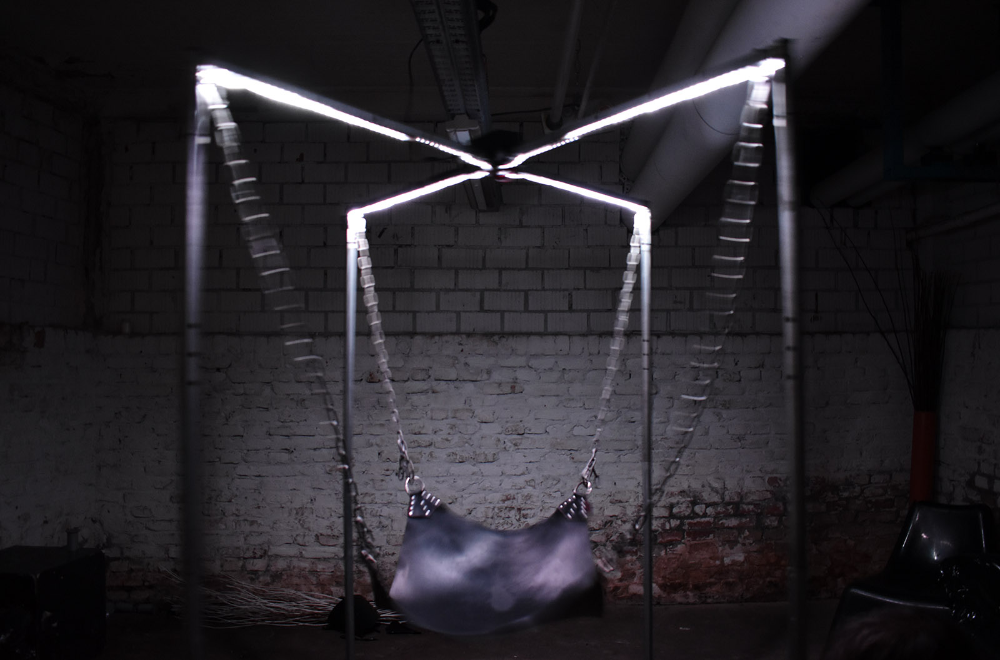
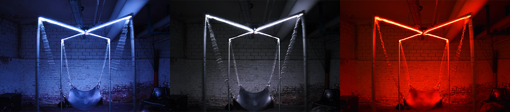
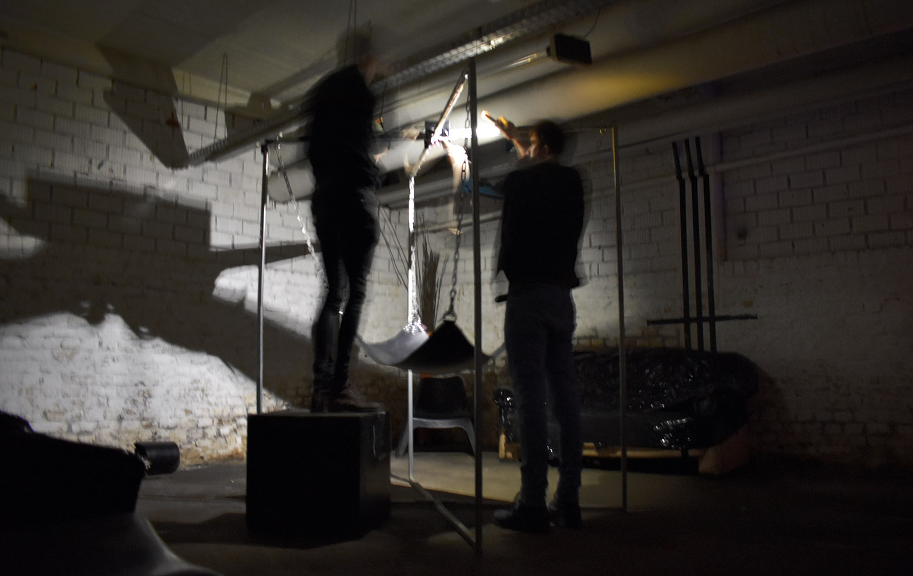

Fucking Lights
Fucking Lights is a light installation which creates an opportunity to experience an age-old practice in new light.
The Arduino-based device senses each sling frame movement. An impulsive stroke triggers a flash which travels along the X-shaped path.

Brightness of the light visuzlizes the amplitude of the movement. Color represents the frequency.

The installation was exhibited at Futuristic Porn by Pornceptual on the 9th of February 2019 in Berlin.
